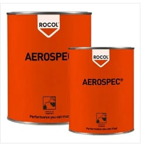
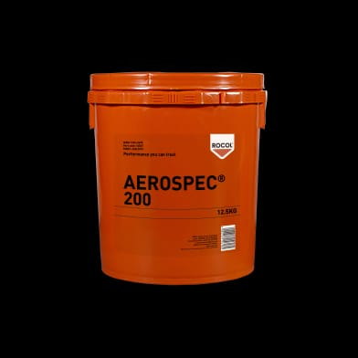
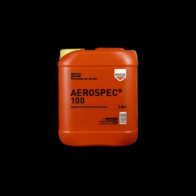
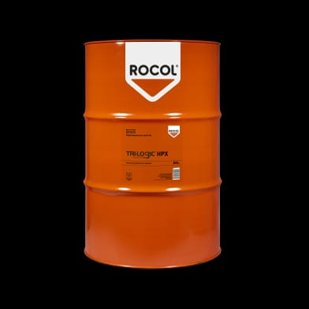

Premium
Industrial Lubricant for
Automobile
Industry
About Us
We have accumulated over two decades of expertise in providing
high-quality lubricating oils, marine paints, and general store items
exclusively designed for the Defense sector. Our products fully comply
with NATO, JSD, and MIL specifications and are produced in various
locations, including the Middle East, Western Europe, and the USA. Our
supplies adhere to MOD standards, featuring unique anti-rust additives
that offer exceptional protection against fretting and moisture-related
corrosion.
Core Values
Our primary objective is to capture customer satisfaction through
delivering quality product and service within the required time
period.
Our team is available 24/7 throughout the year to provide operational
and commercial information to assist customers in achieving “best buy”
solutions to their lubricants buying.
Our dedicated staff members make utmost efforts to cater customized
demands and fulfill customer requirements.
A strict adherence to our set of values and policies, has restrained
us from any unethical act resulting in immense loyalty and reputation
among our customers.
Our Products

AEROSPEC 300 is a long life, multi-purpose grease developed for use
with both anti-friction and plain bearings.... found in the aviation and
shipping industries. Designed to provide long-term lubrication in
arduous operating environments. Extending re-lubrication periods and
reducing maintenance and grease usage.

AEROSPEC 200 is extreme low temperature aerospace grease. It is a
lithium complex synthetic....ester grease, designed to give outstanding
operational performance on a wide range of airframe components
including bearings,actuators, gears, bushes and sliding surfaces,
even where high loads are encountered.
• Folding mosquito net in best quality material • In summer season
save your family members.... from mosquito • Size 6.5* 4 feet • Best
quality products • Available in multi-color • Easy to use

AEROSPEC 100 is trusted by Aerospace & Defense engineers across the
world due to its performance and reliability. It is lithium soap based
semi-fluid low .... temperature aerospace grease containing synthetic
di-ester base oil. The high lubricity of this premium performance
grease increases heat dissipation and reduces operating temperatures,
therefore extending component life and improving reliability.
AEROSPEC 100 low temperature aerospace grease is specifically designed
for the lubrication of rotary actuators and compact high performance
gear boxes operating at low temperatures.

Premium quality, chlorine free, EP, water mix cutting fluid designed
to be used as part of the ROCOL TRI-Logic system. Formulated from a
unique blend of specially.... selected additives to maximize in-sump life.
Designed for heavy duty machining operations on a wide variety of
metals such as steel, stainless steel, aluminum and its alloys. The
combination of lubricity and extreme pressure additives
in TRI-Logic HPX prevents built-up edge, extend tool life and promote
excellent surface finish. The TRI-Logic system is a revolutionary
approach to maximizing cutting fluid sump life, minimizing fluid
disposal and reducing costs. For optimum performance, the TRI-Logic
cutting fluids should be used with TRI-Logic VG68 sideway oil and,
where applicable, TRI-Logic RTD tapping fluid.
Premium quality oil specifically designed for use in the hydraulic
systems of machine tools. Designed to resist the .... tendency to generate
deposits, sludge and varnish so giving increased service life and
extended oil change intervals. The unique formulation of TRI-Logic®
HO32 (World patent rights pending) minimizes the detrimental effects
on cutting fluid emulsions usually associated with hydraulic oil
leaks. Rather than acting as a food source for bacteria and fungi,
therefore promoting growth, TRI-Logic® HO32 resists degradation.
The TRI-Logic® system is a revolutionary approach to maximizing
cutting fluid sump life, minimizing fluid disposal and reducing costs.
For optimum performance, TRI-Logic® HO32 hydraulic oil should be used
as part of the TRI-Logic® system.